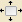

| 4.2. അണിനിരത്തുക | ||
|---|---|---|

|
4. ഉപകരണങ്ങൾ പരിവർത്തനംചെയ്യൂ |  |
| 4.2. അണിനിരത്തുക | ||
|---|---|---|
|
|
4. ഉപകരണങ്ങൾ പരിവർത്തനംചെയ്യൂ | |
വിന്യാസ ഉപകരണം വിവിധ ചിത്രം വസ്തുക്കൾ ഉപയോഗിച്ച് ഇമേജ് പാളികൾ വിന്യസിക്കാം ഉപയോഗപ്രദമായിരിക്കും. ഈ ഉപകരണം തിരഞ്ഞെടുത്തിരിക്കുകയാണെങ്കിലും, മൌസ് പോയിന്റർ ഒരു ചെറിയ കൈ തിരിയുന്നു. ചിത്രം ഒരു പാളി ഒരു ഘടകത്തെ മാകാം, നിങ്ങൾ (, Shift + click നിങ്ങളെ വിന്യസിച്ചിരിക്കുന്ന ചെയ്യുവാൻ നിരവധി പാളികൾ തിരഞ്ഞെടുക്കാം) നീക്കപ്പെടും ഏത് പാളി തീരുമാനിക്കുക; ഈ focalised പാളി കോണിലും ചെറിയ സ്ക്വയറുകളിൽ ഉണ്ട്. ഡയലോഗിൽ വിവിധ ബട്ടണുകൾ പാളി നീക്കും എങ്ങനെ തിരഞ്ഞെടുക്കാം. നിങ്ങൾ ഇമേജ് ഒബ്ജക്റ്റ് (മറ്റ് പാളി, നിരക്കു പാതയിൽ ...) തിരഞ്ഞെടുത്തു പാളികളുള്ള അവസ്ഥയിലാണ് ചെയ്യും തിരഞ്ഞെടുക്കാം. ഈ ഒബ്ജക്റ്റ് target വിളിക്കുന്നു.
You can activate the Align tool in several ways :
From the image-menu, through: → → ,
by clicking on the tool icon:  in the toolbox,
by using the Q keyboard shortcut.
നിങ്ങൾക്ക് പാളികൾ ക്ലിക്ക് Shift അമർത്തിപ്പിടിച്ച് നിരവധി പാളികൾ തിരഞ്ഞെടുക്കാം.
![[സൂചന]](images/tip.png)
|
സൂചന |
|---|---|
|
ചിലപ്പോൾ അത് റബ്ബർ-പരിചയവുമായാണ് ഉപയോഗിച്ച് ഒന്നിലധികം ലെയറുകൾ തിരഞ്ഞെടുക്കാൻ എളുപ്പമാണ്: നിങ്ങൾ തിരഞ്ഞെടുക്കുന്ന ആഗ്രഹിക്കുന്ന പാളികൾ മൂടുകയും സാങ്കൽപ്പിക ചതുരാകൃതിയിലുള്ള പ്രവിശ്യയുടെ പുറത്താണ് എവിടെയോ ക്ലിക്ക് ചെയ്യുക. അപ്പോൾ പോയിന്റർ നീക്കി ആ പ്രദേശം ഇഴയ്ക്കാൻ മൗസ് ബട്ടൺ റിലീസ്. ഇപ്പോൾ വലിച്ചിഴച്ചു റെക്ടാംഗിളിനുള്ളിൽ പൂർണ്ണമായും സകല പാളി, തിരഞ്ഞെടുക്കുന്നു. ഇപ്പോൾ തിരഞ്ഞെടുത്ത പാളികൾ ന് വിന്യസിച്ചിരിക്കുന്ന കഴിയും “first item” യാതൊരു ടാർഗറ്റ് ആണ് എന്ന് ശ്രദ്ധിക്കേണ്ടതാണ്. |
സാധാരണ, ഉപകരണം ഓപ്ഷനുകൾ ഉടൻ ഒരു ഉപകരണം സജീവമാക്കാൻ പോലെ പണിസഞ്ചി കീഴിൽ ഘടിപ്പിച്ചിട്ടുള്ള ഒരു ജാലകം പ്രദർശിപ്പിക്കും. അഥവാ അങ്ങനെയല്ലെങ്കിൽ, നിങ്ങൾ തിരഞ്ഞെടുത്ത ഉപകരണം ഓപ്ഷൻ വിൻഡോ തുറക്കുന്ന → → വഴി ഇമേജ് ബാറില് നിന്നും ആക്സസ് ചെയ്യാൻ കഴിയും.
This is the target - the image object the selected layer will be aligned on.
First item: Shift കീ അമർത്തിപ്പിടിച്ച് ഒന്നിലധികം പാളികൾ തിരഞ്ഞെടുത്ത് ആദ്യ തിരഞ്ഞെടുത്ത ഇനം. നിങ്ങൾ rubber- പരിചയവുമായാണ് ഉപയോഗിച്ച് ഒന്നിലധികം ലെയറുകൾ തിരഞ്ഞെടുക്കാൻ ആരും “first item” ആണ് എന്ന് ശ്രദ്ധിക്കേണ്ടതാണ്.
Image: ചിത്രം ഒരു ലക്ഷ്യമായി ഉപയോഗിക്കുന്നു.
Selection: the minimal rectangular region covering the active selection.
Active layer:
Active Channel:
Active Path:
ഒരു പാളി തെരഞ്ഞെടുക്കുമ്പോഴും ഈ ബട്ടണുകൾ സജീവ തീർന്നിരിക്കുന്നു. നിങ്ങൾ ഈ ബട്ടണുകളിൽ ഒന്ന് ക്ലിക്ക് ചെയ്യുമ്പോൾ, ഇടത് അഗ്രം, യഥാക്രമം, വലത് അഗ്രം, മുകളറ്റത്തെ, വെർട്ടിക്കൽ മധ്യത്തിൽ, ലക്ഷ്യ താഴെയുള്ള തിരഞ്ഞെടുത്ത പാളി വിന്യസിക്കുക.
ഈ ഓപ്ഷനുകൾ മാത്രമേ ഒരു ഓഫ്സെറ്റ് സജ്ജമാക്കാൻ സാധ്യത വഴി “Related to ” ഓപ്ഷനുകൾ നിന്ന് വ്യത്യസ്തമായിരിക്കും തോന്നുന്നില്ല. ഈ ഓഫ്സെറ്റ് അലൈൻമെന്റ് നടപ്പാക്കില്ല ഒരിക്കൽ ലക്ഷ്യത്തിൽ നിന്നും തിരഞ്ഞെടുത്ത ലെയർ (ങ്ങൾ) വേര്തിരിച്ചു ഏത് അകലം. ഇതിനെ അനുകൂലമോ പ്രതികൂലമോ കഴിയും പിക്സൽ ലെ പ്രകാശിപ്പിക്കുന്ന. ഇടത് അറ്റങ്ങൾ, തിരശ്ചീനമായി കേന്ദ്രങ്ങൾ, ശരിയായ വേണമങ്കിലും, മുകളിൽ വേണമങ്കിലും, വെർട്ടിക്കൽ കേന്ദ്രങ്ങൾ, അല്ലെങ്കിൽ ലക്ഷ്യം അടിവാരങ്ങളോളം ഓഫ്സെറ്റ് ചെയ്യല് വിതരണം.
ഈ എൻട്രി ആവശ്യമുള്ള വിന്യാസം പ്രഭാവം (പിക്സൽ ൽ) ടാർഗറ്റ് സംബന്ധിച്ച കൊടുത്ത ചെയ്യാവുന്ന കുടിയൊഴിപ്പിക്കലിന് തുക നിയന്ത്രിക്കുന്നു. സ്ഥിര മൂല്യം 0; ഇതിനെ അനുകൂലമോ പ്രതികൂലമോ ആകാം.
ചിത്രം 14.108. Base image
ഈ ചിത്രം വ്യത്യസ്ത വലുപ്പത്തിലും ചതുരാകൃതിയിലുള്ള സെലക്ഷനും മൂന്നു സങ്കല്പങ്ങള്. മഞ്ഞ പാളി സജീവമാണ്.
ചിത്രം 14.109. Red layer selected
ഓരോ കോണിലും ഒരു ചെറിയ സ്ക്വയർ ഉപയോഗിച്ച് ചുവന്ന പാളി തിരഞ്ഞെടുത്തു,: ചുവന്ന ക്ലിക്ക് ചെയ്യുക.
ചിത്രം 14.110. റെഡ് പാളി വിന്യസിച്ചു
നാം ഒരു ലക്ഷ്യമായി “Selection” തിരഞ്ഞെടുത്തു ഞങ്ങൾ ബട്ടൺ (ബന്ധപ്പെട്ട) ക്ലിക്കുചെയ്തിരിക്കുന്നു. നിരക്കു വലതുഭാഗത്ത് ചുവന്ന പാളി alignes.
ചിത്രം 14.111. Distribute with offset
നാം -5 ലേക്ക് ഓഫ്സെറ്റ്, ഞങ്ങൾ ഒരു ലക്ഷ്യമായി “Active layer” തിരഞ്ഞെടുത്തു ഞങ്ങൾ  ബട്ടൺ (ഡിസ്ട്രിബ്യൂഷൻ) ക്ലിക്കുചെയ്തു വെച്ചു. പാളി മഞ്ഞ സജീവ പാളി വലതുഭാഗത്ത് മുമ്പിൽ 5 പിക്സൽ വിന്യസിക്കുന്നത്.
ബട്ടൺ (ഡിസ്ട്രിബ്യൂഷൻ) ക്ലിക്കുചെയ്തു വെച്ചു. പാളി മഞ്ഞ സജീവ പാളി വലതുഭാഗത്ത് മുമ്പിൽ 5 പിക്സൽ വിന്യസിക്കുന്നത്.
ചിത്രം 14.112. റബ്ബർ-ബാൻഡ് ബോക്സ് ഉപയോഗിച്ച് വിന്യസിക്കുക
നാം മുകളിൽ നിന്നും ചുവന്ന പാളി അവശേഷിക്കുന്നു അമര്ത്തുകയും താഴെ വലത് കോണിലുള്ള നേരെ പോയിന്റർ നീക്കി ചുവപ്പ്, മഞ്ഞ പാളി മൂടുകയും ഒരു പ്രദേശം വലിച്ചിട്ടു.
വീണ്ടും Selection ലക്ഷ്യം. ബട്ടണിൽ ക്ലിക്ക് ചെയ്ത ശേഷം, ഇരു പാളികൾ നിരക്കു ഇടത് വശത്ത് കൂടെ aligne.